Falando de modo simples, o Arduino é um conjunto de ferramentas de prototipagem eletrônica open source que visa tornar mais fácil a criação de aparelhos eletrônicos. Além de oferecer uma placa controladora, ele possui também um ambiente de desenvolvimento, por isso é considerado uma plataforma e não simplesmente um hardware. Basta ligar a placa ao computador e já é possível escrever códigos para o Arduino no ambiente de desenvolvimento do software (através da linguagem C/C++).
A placa básica do Arduino possui uma série de sensores, o que permite a integração com outros dispositivos e a interação com outros aparelhos. Ou seja, ele pode funcionar através da sua própria interface ou interagir com outros aplicativos instalados no computador. Isto permite que o desenvolvedor crie tanto gadgets simples como robustos. Além disso, é possível comprar a placa original (com os circuitos “do zero”) ou optar por uma pré-montada, com os circuitos já interligados.
A linguagem de programação utilizada para programar o Arduino é a linguagem C++ com algumas pequenas modificações. Essa linguagem de programação pode se dizer que, se não for a linguagem de programação mais poderosa é uma delas, porque essa linguagem não tem limitações, com C++ consegue-se o acesso a todo o hardware do aparelho, é muito utilizada em computadores, mas agora também no Arduino.
O C++ é uma linguagem rápida e é relativamente fácil de se compreender. Alguns podem dizer que não é tão simples de compreender como outras linguagens mais modernas atualmente, mas a comparação que faço é com a linguagem ASM que é a linguagem mais perto da linguagem de máquina de modo simples e mais "humano" possível. Para se ter uma base de comparação, alguns microcontroladores PICs mais limitados eram e ainda são programados em linguagem ASM porque o hardware é muito mais simples exige um código mais enxuto, e isso só é conseguido com linguagem ASM.
No Arduino não é necessário utilizar linguagem ASM, porque o processador tem mais capacidade, e nos da o luxo de gastar um pouco mais de recursos de memória e processamento para manter o código mais fácil de entender.
Segue abaixo um exemplo de código utilizado em um Arduino, com a função de fazer um led piscar:
// A função setup é a primeira função que é executada quando o Arduino é executado, serve para configurar o Arduino com a informação que o pino escolhido será utilizado para saída, colocamos saída porque o Arduino colocará tensão no pino para acender o LED, então ele envia, ou coloca para fora uma tensão, por isso é saída.
void setup() {
// inicialize o pino digital aqui chamado de LED_BUILTIN como uma saída.
pinMode(LED_BUILTIN, OUTPUT);
}
//Essa função abaixo, é executada infinitamente, fazendo com que o led fique piscando sem parar.
void loop() {
digitalWrite(LED_BUILTIN, HIGH); // Acende o LED ao colocar o pino em nivel alto (HIGH), eletricamente significa colocar tensão no pino .
delay(1000); // espera um segundo, o led continua acesso nesse momento...
digitalWrite(LED_BUILTIN, LOW); // Apaga o LED colocando o pino em nível de tensão baixo (LOW), eletricamente significa retirar a tensão do pino.
delay(1000); // espera um segundo novamente, o led continua apagado nesse momento...
// Nesse momento chegou ao fim do programa. No Arduino a função loop() é reiniciada automaticamente
}
O Arduino serve para ensinar pessoas a programar, para criar projetos de eletrônica, projetos robóticos, projetos para internet, são infinitas possibilidades, através dos devidos acessórios, como displays, teclados, módulos de relés, gsm, rf entre outros pode-se se controlar de tudo, motores, abertura de portas, cortinas, fechaduras, carrinhos, monitoramento de sensores de nível de água, gás, calor, pressão, som, etc...
Para se utilizar um Arduino, você normalmente precisará dos seguintes equipamentos:
Há uma diversidade de modelos para cada necessidade do usuário. Surpreendentemente tem modelo que é do tamanho de um polegar, tem modelo que é circular e tem um modelo que parece um controle de vídeo game. Confira alguns dos modelos aqui embaixo:
O modelo Pro Mini é destinado a usuários avançados que exigem flexibilidade, baixo custo e pequeno tamanho. Ele vem com o mínimo de componentes (sem USB ou cabeçalhos de pinos) para manter o custo baixo. Certamente é uma boa escolha para quem quer deixá-lo embutido em um projeto.
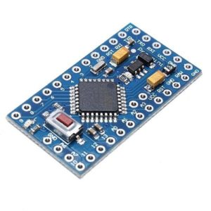O modelo Fio é destinado para aplicações wireless (sem fio). Ele tem conexões para uma bateria de polímero de lítio, inclui um circuito de recarga USB e um conector para módulo XBee está disponível na parte inferior da placa.
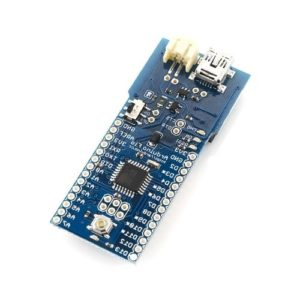O modelo Nano é ideal para projetos compactos. Facilmente notamos que esse modelo tem o seu tamanho reduzido quando comparado aos demais.
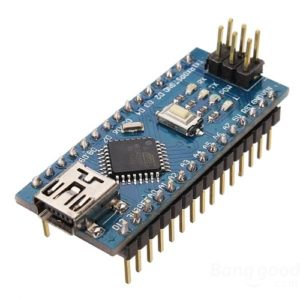O modelo Micro é parecido com o modelo Leonardo pois ambos têm a comunicação USB direta com o microcontrolador, portanto não é necessário um processador secundário. Quando conectado ao computador, o Arduino Micro é identificado como se fosse um mouse ou um teclado.
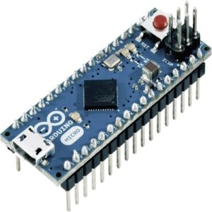O modelo Uno é o mais conhecido e o mais indicado para quem está começando agora pois possui uma boa capacidade de processamento, uma simples utilização com seus periféricos e uma simples linguagem de programação que se assemelha com C++. Faremos um post exclusivo falando com mais detalhes sobre ele.
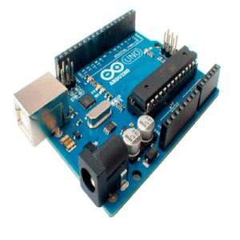O modelo Leonardo possui maior capacidade de processamento que a versão UNO e pode ser usado em projetos maiores, porém não é indicado para quem está começando, pois essa placa tem uma comunicação serial diferente das demais sendo necessário que o usuário tenha o conhecimento da sua linguagem de programação própria.
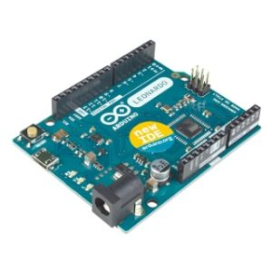O modelo Mega é conhecido pelo seu grande tamanho e por sua quantidade de pinos de entrada e saída. É indicado para projetos grandes por conta da sua uma excelente capacidade de memória, além disso é muito indicado para novos usuários. A única desvantagem dele é preço, comumente ele custa o dobro do Arduino Uno. Além dessa versão, ele possui uma versão compacta que é o Arduino Mega 2560 pro mini.
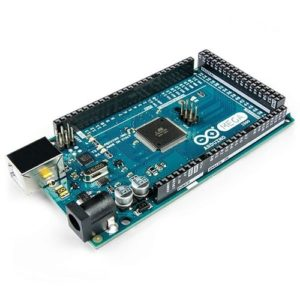A família de placas LilyPad Arduino, existe quatro modelos, foi projetada para aplicações vestíveis. Funciona com baterias recarregáveis e permite fácil conexão com sensores e atuadores desenvolvidos para uma fácil integração em roupas e tecidos. O LilyPad Arduino, o LilyPad Arduino Simple e o LilyPad Arduino Simple Snap são diferentes das placas Arduino habituais porque precisam de uma interface USB para Serial para serem programadas.
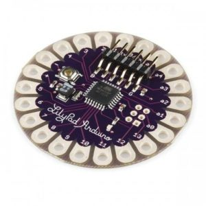O modelo Duo é conhecido por ter super poderes. Ele é do mesmo tamanho e possui e mesma quantidade de portadas do Arduino Mega, mas o que o torna especial é o seu incrível processador ARM de 32 bits.
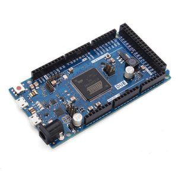O modelo Yun (Yun significa nuvem em chinês) é basicamente o Arduino Leronado com sistema poderoso wireless rodando Linux Wifi. É ideal para projetos que precisam se conectar e interagir com servidores da web ou redes.
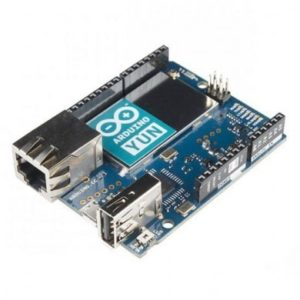O modelo Esplora parece um controlador de videogame e você pode utilizá-lo para controlar o computador como se fosse um mouse ou um teclado. Ele se diferente das outras placas por possui entradas e saídas já conectadas à placa e por conta disso é diferente programá-lo, ele possui sua própria biblioteca especialmente para facilitar a leitura de entradas e de gravação de saídas.
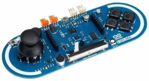O modelo Robot vem completo, possui dois processadores (um em cada placa) que não precisam de processadores secundário pois ambos os têm comunicação USB. Junto a ele já vem incluso rodas, alto falante, display de LCD colorido, Leitor de cartão SD, teclado de 5 teclas, compartimento da bateria AA 4 alcalinas ou NiMH recarregáveis, sensores IR e muitos dos seus pinos são mapeados para sensores e controladores de motores.
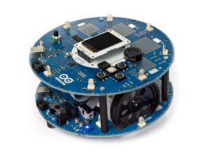O modelo Ethernet tem embutido em sua placa um network Ethernet, os pinos 10, 11, 12 e 13 são reservados exclusivamente para a interface com o módulo Ethernet além disso, possui conexão Rj45 para conectar o cabo diretamente à placa.
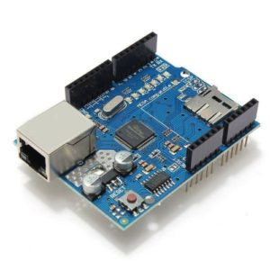O modelo Pro é destinado para instalação semi-permanente, por esse motivo a placa vem sem conectores pré-montado, permitindo o uso de vários tipos de conectores ou mesmo a ligação de fios diretamente na placa ainda assim a pinagem é compatível com os shields Arduino.
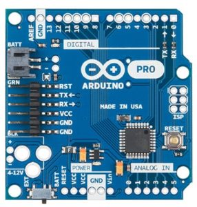O modelo Tre ou o Arduino ” Tre chique ” é incrível, ele está mais para um pi raspberry do que para um Arduino. O Tre é baseado no processador de 1 GHz com nada menos que 512 MB de memória RAM DDR3, saída de som, saída HDMI, USB Host + dispositivos.
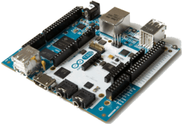Comparação entre Arduinos apresentados:
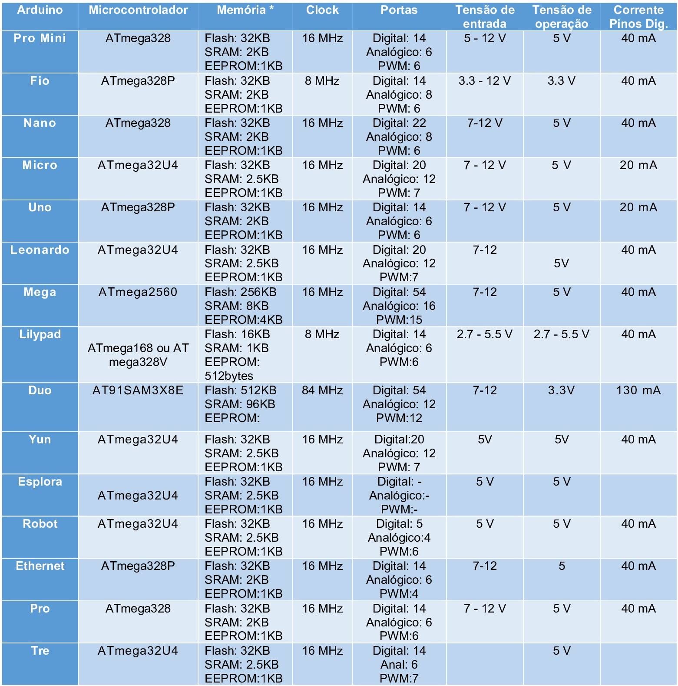Apenas a placa Arduino não é o suficiente para fazer pequenos projetos, mas se você estiver afim de implementar automatizar o seu projeto será necessário usar sensores para fornecer informações de entrada e atuadores para excetuar uma resposta.
Sensor de presença, sensor de temperatura, sensor de peso e sensor de luminosidade são exemplos de dispositivo que fornecem informações de entrada ao Arduino.
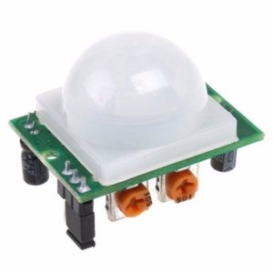Relé, motor, buzzer e display são exemplos de dispositivos que o Arduino envia uma saída para executarem uma resposta.
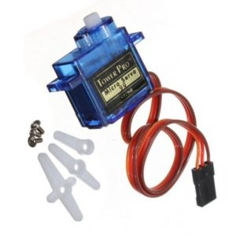Os módulos e os shields têm como objetivo de simplificar e de aumentar a funcionalidade de uma placa arduino com uma facilidade de conexão. Há muitos no mercado mas como exemplo podemos citar o módulo de reconhecimento de voz, módulo MP3, módulo Wireless, shield ethernet, shield LCD e shield joystick.
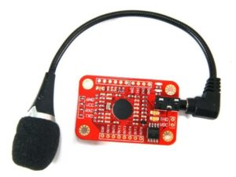Arduino original como o próprio nome indica é a placa de Arduino fabricada na Itália pela empresa que criou a plataforma Arduino, mas como essa criação foi utilizada a licença mais flexível que permite que qualquer um possa copiar as placas similars, foi dai que surgiram as versões compatíveis, que fazem o mesmo, ou pelo menos espera-se que façam o mesmo que a placa original faça, mas sem a marca Arduino.